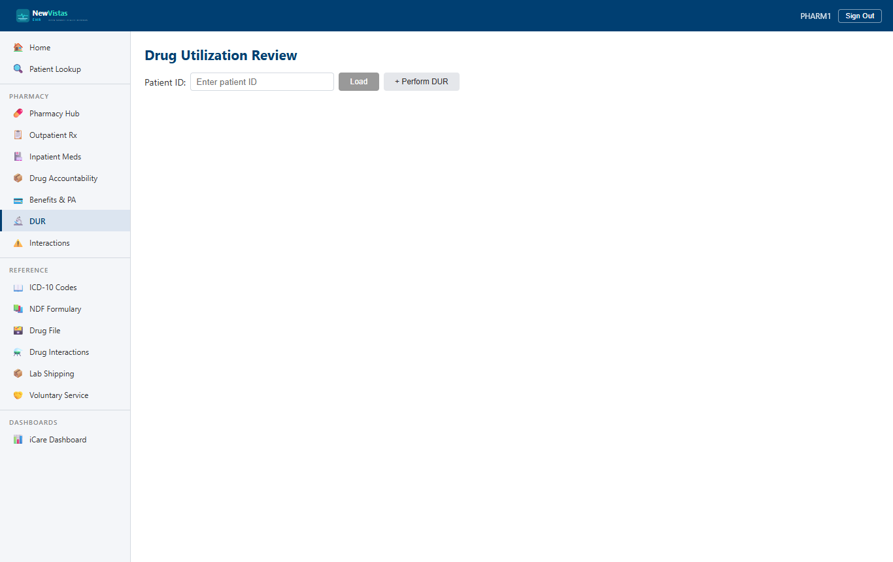

Drug Utilization Review (DUR)
A DUR screens a prescription against the patient's chart before it's dispensed — checking for duplicate therapy, drug-allergy contraindications, excessive days supply or dose, controlled-substance concerns, and renal/hepatic risk. It's the clinical safety net that runs ahead of the fill.
Run a DUR assessment
- In the sidebar, under Pharmacy, open Drug Utilization Review (or go to
/drug-utilization-review). - Enter the Patient ID (e.g.
9) and click Load. - Click + Perform DUR to open the assessment form.
- Fill in the drug details — prescription ID, drug name and ID, VA drug class, dosage, route, schedule, days supply and quantity (plus their maximums), controlled-substance flag, ingredient IENs, and max daily dose.
- Enter Performed By (e.g.
PHARM1) and click Run DUR.

On submit you get a success banner ("DUR assessment completed: DUR-XXXXXXXX") and the view switches to the Detail tab. The header shows the overall outcome and the Check Results table lists every check with its outcome.
What the checks mean
- Duplicate Drug — flags an existing active prescription for the same drug; the Conflict column names it.
- Drug-Allergy Contraindication — matches the drug against the patient's documented allergies (including cross-reactivity, e.g. penicillin ↔ amoxicillin). A critical safety check.
- Days Supply Exceeded — days supply is over the configured maximum.
- Max Dose Exceeded — the daily dose is over the drug's maximum.
- Controlled Substance — surfaces DEA-schedule requirements; typically a Warning rather than a hard fail.
- Renal Adjustment — triggered by a low eGFR lab (< 60); recommends dose reduction or discontinuation.
- Hepatic Adjustment — triggered by elevated liver enzymes (e.g. ALT > 3× ULN); recommends holding hepatotoxic drugs.
Outcome badges
- Pass (green) — the check is satisfied.
- N/A — the check doesn't apply to this drug.
- Warning (yellow) — a concern that needs acknowledgment but isn't a hard stop.
- Fail (red) — a blocking issue. An Override button appears on the row.
- Override (gold/brown) — a failed check a pharmacist has overridden with a reason.
Override a failed check
A pharmacist may override a failed check, but only with a recorded clinical reason — the override is audited.
- Open the failed assessment (from the All or Pending tab, click View).
- On the failed check's row, click Override.
- Enter your Pharmacist ID and a Clinical Reason (e.g. "Provider aware of duplicate therapy. Dose titration in progress; old prescription to be discontinued.").
- Click Submit Override. The row's outcome becomes Override and shows who overrode it; the reason appears on hover.
When every failed check is overridden, the assessment status becomes OverriddenByPharmacist.
Acknowledge the assessment
- On a Passed or Overridden assessment's Detail tab, find the Acknowledge section.
- Enter your Pharmacist ID and any notes.
- Click Acknowledge. The status becomes Acknowledged (blue badge), the section records the date/time and your ID, and the assessment drops off the Pending tab.